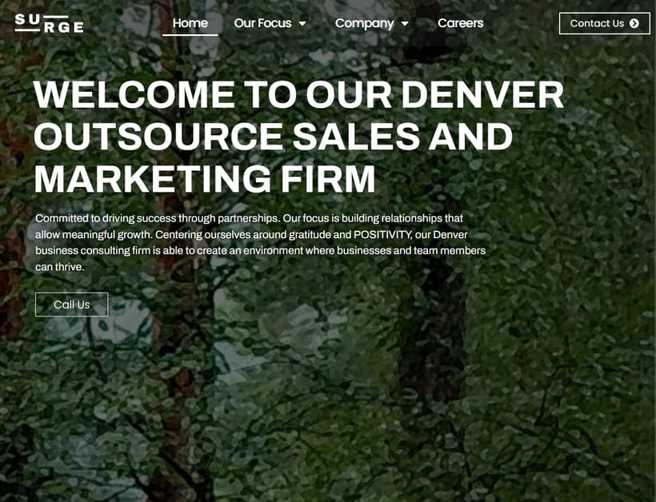
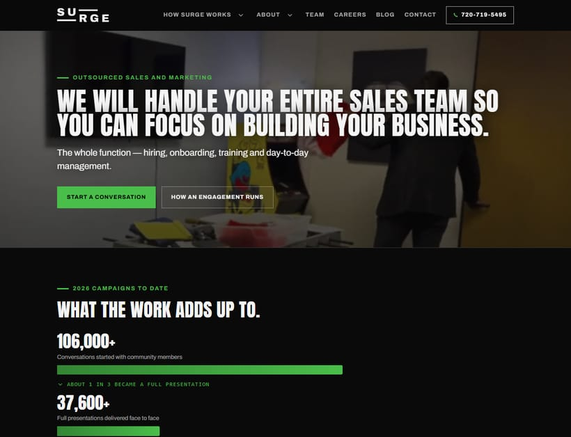
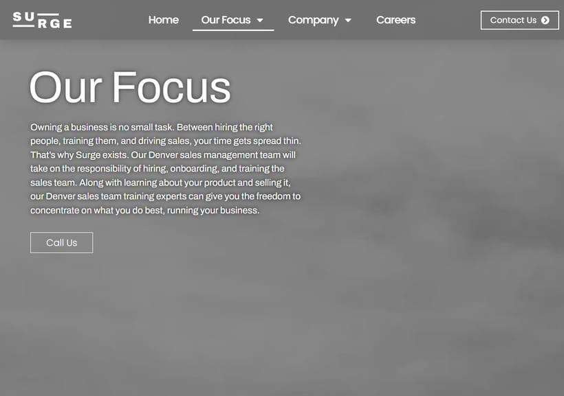
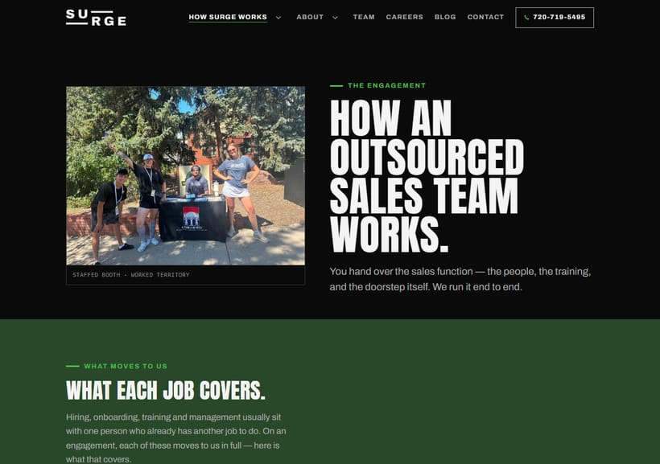
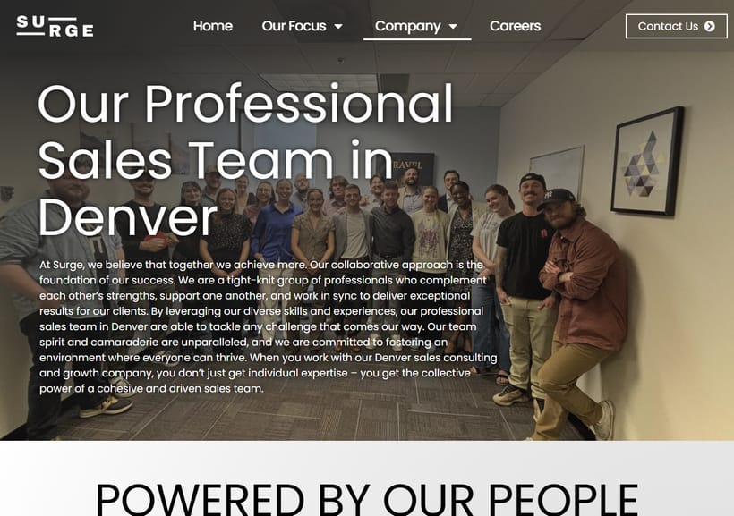
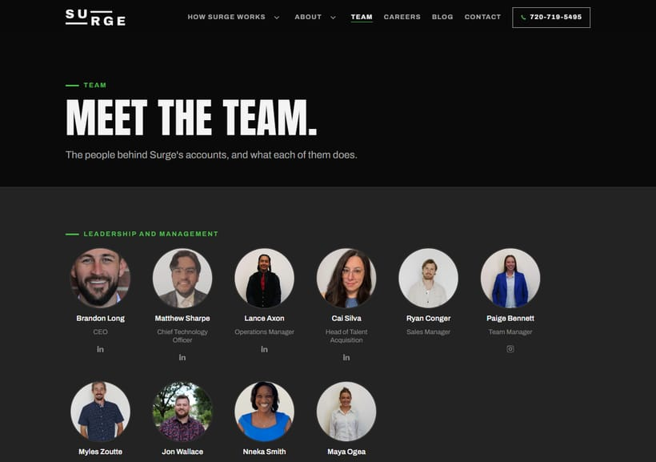

Surge
That is the whole case for the rebuild in one line. The site live on surgeftw.com today is competently built — it just describes a Denver B2B consulting firm selling fractional sales and lead generation. Surge is an Englewood field-sales operation running door-to-door, phone, events and booths, with clients in multiple states.
| Live site today | New build | |
|---|---|---|
| Who it says we are | “Denver Outsource Sales & Marketing | Business Consulting Firm” | “Outsourced Sales Teams | Surge” |
| Where it says we work | Denver, in 5 of 7 page titles. The office is in Englewood. | Clients in multiple states. Englewood named only where the office or hiring is the subject. |
| Pages a customer can read | 7 | 26, including 6 written articles and 10 named team pages |
| Homepage weight | 101 KB of HTML, 16 scripts | 39 KB of HTML, 1 script |
The “Call Us” button — the only call-to-action on the live homepage's opening screen — dials 719 315 7742. The page displays the correct 720 number beside it, and the header's “Contact Us” uses the correct one too. So the hero button on the live site sends mobile visitors to a number that is not Surge's.
Verified 20 September 2026 by reading href="tel:" on the live page.
This is independent of the new build and can be corrected in WordPress in a minute.


Left: the opening screen is a forest photograph with no connection to selling, and the only button dials the wrong number. Right: the offer in the first sentence, two ways to act, and the work itself underneath.
Voice
Surge carries a public reputation problem — the MLM accusation. The company's own voice guide is blunt about it: never argue with the accusation, and never publish culture content that runs on vibes, because that is what gets cited as evidence.
The second sentence on the live homepage:
“Committed to driving success through partnerships. Our focus is building relationships that allow meaningful growth. Centering ourselves around gratitude and POSITIVITY, our Denver business consulting firm is able to create an environment where businesses and team members can thrive.”
Four sentences, no verifiable fact, one word in capitals. A prospective client learns nothing about what is actually sold or how. Someone researching the accusation finds it confirming.
The rebuilt homepage opens with what the company does:
“We will handle your entire sales team so you can focus on building your business. The whole function — hiring, onboarding, training and day-to-day management.”
| Live site | New build |
|---|---|
| “An award-winning goal driven sales team” | 106,000+ conversations, 37,600+ presentations, 8,900+ sign-ons — each with the period, the source and the scope stated beneath |
| “Denver's leading sales outsourcing firm” | No superlative. The method is explicitly not claimed as unique — “anyone can get the method, the difference is the teaching” |
| “fractional sales and lead gen roles” | Door to door, phone outreach, events, booths — the four channels actually worked |
“Award-winning” is unverifiable, so a sceptical reader discounts it and a hostile one uses it. A figure with a period, a scope and a pullable source behind it does the opposite — which is why the campaign figures carry a paragraph saying what they count.


The old page says “Denver” twice in two sentences and stops. The new one covers the four jobs, the four channels, the five stages and nine common questions — about 900 words against 200.
Proof
For a company with an MLM accusation attached to it, a real and checkable team is not a nice touch — it is the single strongest counter available, and it works without ever mentioning the accusation. The live site has seven people with short placeholder-style quotes. The new one has ten, each with their own page, their own photograph and a bio in their own words.


info@.| Not done | Why |
|---|---|
| Name a single client | Consent, not roster size. No client hired Surge in order to become marketing material. The live site names one in its page copy; the new site names none. Logos are separately cleared and can be used as logos. |
| Claim offices in several cities | The other locations are affiliate, not Surge-operated, and the Houston room is closed. The live site lists three cities. |
| Claim a proprietary method | It isn't one, and saying so is the more persuasive position — the page says the method is common and the teaching is the difference. |
| Put earnings anywhere near recruiting copy | Commission structure and turnover mean a figure can mislead without being false. |
| Run analytics | Decided 16 September: no tracking script. The privacy policy says so in published copy, and SiteGround's server-side stats plus Search Console answer the same questions. |
Build quality
The rebuild ships with its own test suite, which is unusual for a site this size and is the reason the claims in this document can be stated as numbers. Four auditors run against it:
| Auditor | What it checks | Current result |
|---|---|---|
| Link & asset audit | Every internal link, asset and anchor resolves, on the built bundle rather than the source | 28 pages, 0 broken |
| Bundle verify | Tags balanced, no build comments shipped to the public | 28 pages, clean |
| Device audit | iOS zoom traps, tap-target sizes, text under 12px, what a phone actually downloads, both navigation modes — across nine real device sizes | 0 failures across 252 renders |
| SEO audit | Titles, descriptions, canonicals, headings, the internal link graph, sitemap coverage, structured data | 0 failures |
Every phone was downloading both hero videos. A one-line ordering mistake meant the 1.4 MB desktop video was fetched in addition to the 560 KB mobile one. The homepage was 2.7 MB on a phone; it is now 1.1 MB.
Every form field was 15.2px. iOS Safari zooms the whole page when a field under 16px takes focus, and does not zoom back out. Every field on the contact and booking pages did it. That is the single most common reason a site feels “not built for phones”, and it is invisible on a desktop.
The build is complete and bundled. It is held behind a noindex instruction on all
28 pages and a Disallow in robots.txt — deliberately, so nothing is
indexed before it is approved. Turning those off is the launch step.
Still outstanding, and all of it is a decision rather than work:
info@ — the only step that
cannot be proved locally.It does not produce traffic on its own. The site has been invisible to search engines by design, so it starts from nothing and Google takes weeks to crawl and settle a new structure. What launching does is make the company findable for what it actually does, under its own name, with a working phone number and a form that reaches somebody. The traffic argument is the next piece of work, not this one.
Prepared 20 September 2026. Figures measured from surgeftw.com and from the rebuild on the same day. Screenshots are unretouched full-page captures at 1280 px.